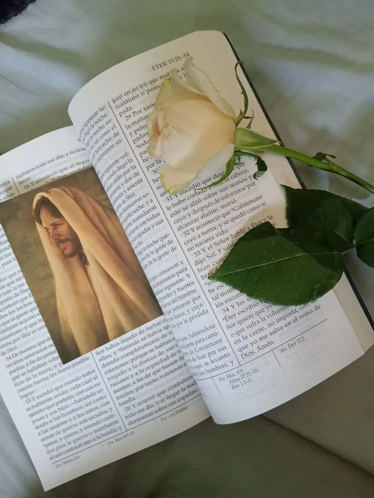

Introduction
Spiritual journaling is a practice of recording thoughts, feelings, and experiences related to your faith. It’s an intimate moment with your soul and with God.
Writing Prompts
- What blessings did I notice today?
- What did I learn from my scripture study?
- How did I feel the Spirit’s guidance?
Sample Journal Entry
Quote
“Faith is taking the first step even when you don’t see the whole staircase.” — Martin Luther King Jr.